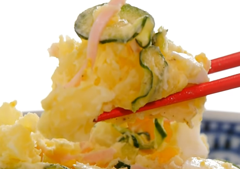

Japanese Potato Salad - The Easy Way

I know, it seems like a normal potato salad from the above image.
..but this one is actually different, it's the japanese way of making this delicious meal!
Ingredients:
- 3 Small Potatoes
- 1 Cucumber
- 3-4 Slices Ham
- 2 Eggs
- 3-6 Tbsp Mayonnaise (your preference)
- 1 Tsp Vinegar
- Salt
- Pepper
Steps:
- Cut and boil potatoes and eggs at the same time
- In the meantime, slice cucumbers, cutting out the seeds if you need to
- Put cucumbers into a plastic bag along with 1/4 tsp salt.
- Give it a good massage and set it to the side to let excess water come out
- Slice ham and set aside
- Take out eggs after 12-15 minutes and put into cold water
- Potatoes are done when a stick can easily be pierced
- Take off the skins if you don't like them
- Slice boiled eggs
- Add in the eggs
- Squeeze out excess water from the cucumbers and add to the potatoes
- Add ham and mayonnaise
- Season with salt and pepper to taste